ボディケア
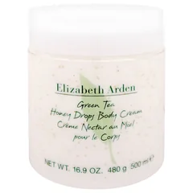
エリザベスアーデン
グリーンティー ボディクリーム
500mL
¥2,290税込・出典掲載価格
クチコミの要約
- 小さい容器に小分けして職場で手に塗ってたら同僚たちから『なんの匂い？』って聞かれたの
- お風呂上がりに腕や足に塗ると寝るときベッドの中までふわっと緑茶っぽい香りがするんだよ
気になる声たっぷり入ってるのはいいけど私には香りが草っぽく感じて好みが分かれそうな香りかな
販売価格・容量・送料はリンク先でご確認ください
THE COSME EDIT / 2026.09.15
YouTubeの動画で紹介した18品です。楽天のクチコミで香りの評判が良いものを、ボディケア・ヘアケア・柔軟剤・ハンドクリームとフレグランスに分けています。
18 ITEMS 動画で紹介した商品
価格は出典掲載時のものです。楽天の現在価格とは異なる場合があります。

エリザベスアーデン
500mL
¥2,290税込・出典掲載価格
クチコミの要約
気になる声たっぷり入ってるのはいいけど私には香りが草っぽく感じて好みが分かれそうな香りかな
販売価格・容量・送料はリンク先でご確認ください
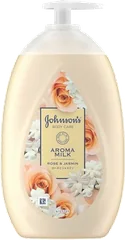
ジョンソンボディケア
500mL
¥1,007税込・出典掲載価格
クチコミの要約
気になる声香りは気に入ってるんだけど中身が残り少なくなってくるとポンプで最後まで出しにくいかな
販売価格・容量・送料はリンク先でご確認ください
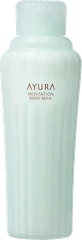
アユーラ
280mL
¥3,850税込・出典掲載価格
クチコミの要約
気になる声塗ってすぐは癒される香りだけど思っていたより早めに香りが消えちゃうのがちょっと残念かな
販売価格・容量・送料はリンク先でご確認ください
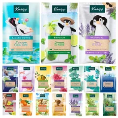
クナイプ
50g×13個
¥2,279税込・出典掲載価格
クチコミの要約
気になる声13種類いろんな香りが入ってて楽しいけど、中にはあまり好みじゃない香りもあったかな
販売価格・容量・送料はリンク先でご確認ください
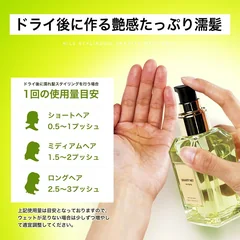
NILE
100mL
¥2,280税込・出典掲載価格
クチコミの要約
気になる声前のりんごの香りが好きでまた買ったんだけど今のは香りがきつく感じちゃったかな
販売価格・容量・送料はリンク先でご確認ください
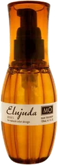
ミルボン
120mL
¥2,499税込・出典掲載価格
クチコミの要約
気になる声つけた時はふんわりいい香りだけどドライヤーで乾かしたあとはほとんど残ってない感じかな
販売価格・容量・送料はリンク先でご確認ください
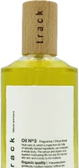
ジョエルロティ
90mL
¥4,500税込・出典掲載価格
クチコミの要約
気になる声金木犀の香りは好きなんだけどポンプ式の容器になってからオイルが出にくい時があるかな
販売価格・容量・送料はリンク先でご確認ください
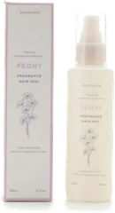
ジェラートピケ
¥2,090税込・出典掲載価格
クチコミの要約
気になる声かけた直後はとてもいい香りだけど時間がたつと香りの印象が少し変わる気がしちゃったかな
販売価格・容量・送料はリンク先でご確認ください
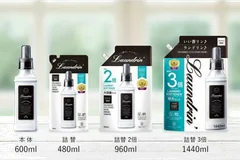
ランドリン
1.44L
¥1,738税込・出典掲載価格
クチコミの要約
気になる声入れる時はすごくいい香りなんだけど、干して乾くとあまり残らない気がしたかな
販売価格・容量・送料はリンク先でご確認ください
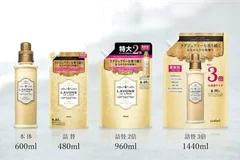
ラボン
960mL
¥1,265税込・出典掲載価格
クチコミの要約
気になる声いい香りって声が多いけど私には洗剤が残ってるような香りに感じちゃったのが残念かな
販売価格・容量・送料はリンク先でご確認ください
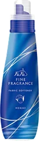
ファーファ
570mL
¥1,010税込・出典掲載価格
クチコミの要約
気になる声オムの香りはバニラっぽい甘さがあって好みが分かれそう仕事着に使うのはやめたかな
販売価格・容量・送料はリンク先でご確認ください
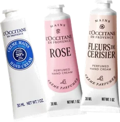
ロクシタン
30mL
¥1,120税込・出典掲載価格
クチコミの要約
気になる声ラベンダーの香りを試したけど思ったより香りが強めだから仕事中は使いにくかったかな
販売価格・容量・送料はリンク先でご確認ください
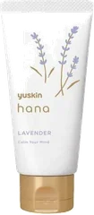
ユースキン
50g
¥613税込・出典掲載価格
クチコミの要約
気になる声ラベンダーの香りはいいんだけど塗ったあと手がつるつるして何か持つと滑りそうで気になるかな
販売価格・容量・送料はリンク先でご確認ください
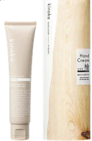
ユースキン
40g
¥1,430税込・出典掲載価格
クチコミの要約
気になる声想像してたヒノキとは違って男性のコロンっぽく感じたから私は寝る前だけ使ってるかな
販売価格・容量・送料はリンク先でご確認ください
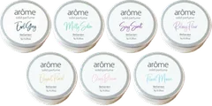
アローム
7g
¥1,780税込・出典掲載価格
クチコミの要約
気になる声好きな香りを選んで買ったのに開けたら油っぽい匂いがしてそれが気になっちゃったかな
販売価格・容量・送料はリンク先でご確認ください
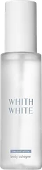
フィス ホワイト
100mL
¥2,580税込・出典掲載価格
クチコミの要約
気になる声つけた最初はアルコールっぽくてそのあといい香りになるけど数時間で消えちゃうのが残念かな
販売価格・容量・送料はリンク先でご確認ください
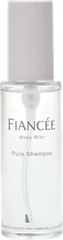
フィアンセ
50mL
¥1,320税込・出典掲載価格
クチコミの要約
気になる声つけた瞬間はいい香りだけど飛ぶのが早いから、お昼にももう一回つけ直してるかな
販売価格・容量・送料はリンク先でご確認ください
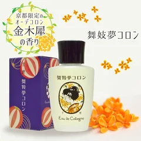
舞妓夢コロン
20mL
¥1,398税込・出典掲載価格
クチコミの要約
気になる声つけたてはアルコールっぽいツンとした匂いが先にきて香りも長くは続かないかな
販売価格・容量・送料はリンク先でご確認ください
SOURCE & NOTES
集計期間：2026年9月14日に確認したクチコミです。件数はその商品ページの件数で、ショップによって異なります。
価格は2026年9月14日に楽天の商品ページで確認した税込価格です。香りの感じ方には個人差があります。